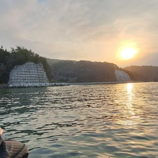
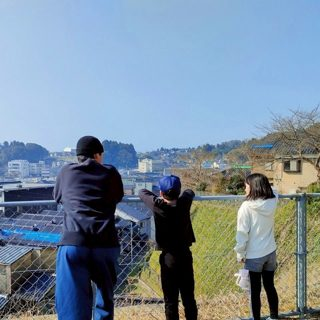
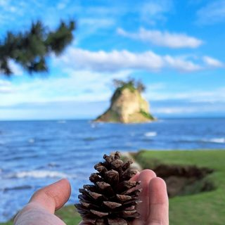
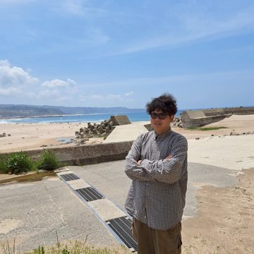
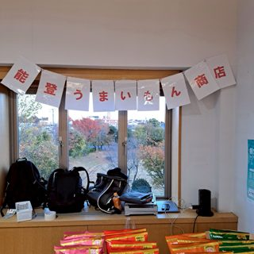
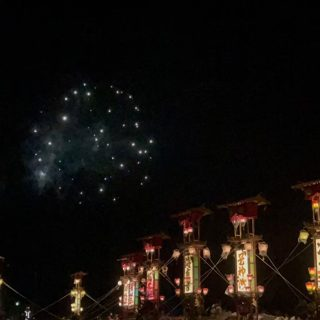
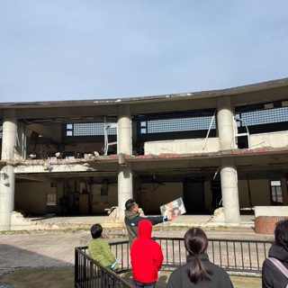
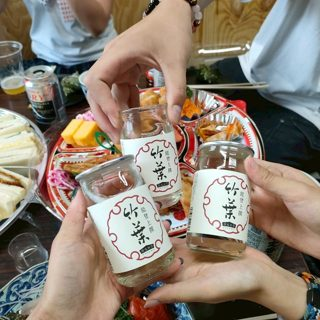
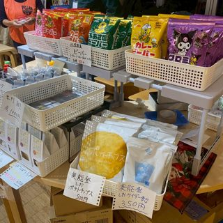
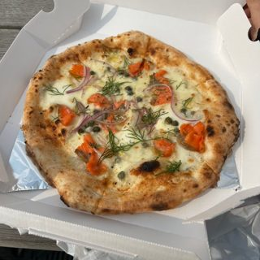

学生団体そよかぜSoyokaze
ただいまと思える
場所を作る
宮城県石巻市・石川県能登町を中心に、地域の魅力発信や防災・子ども支援を行う学生ボランティア団体です。 心地良いそよかぜを吹かすように、人と地域をやさしくつなぎます。
団体概要About
人と地域を
やさしくつなぐ
-

そよかぜとは？
人と地域をやさしくつなぐ、学生主体のボランティア団体です。
-

活動エリア
能登・東北を中心に、全国の地域と関東をつなぐ活動を行っています。
-

大切にしていること
「楽しい」を起点に、防災や復興への関心につなげることを大切にしています。
代表挨拶Message

真面目さ・楽しさ・
真剣さをモットーに
こんにちは、そよかぜ代表のそよかぜ たろうです。 私たちは「真面目さ・楽しさ・真剣さ」をモットーに、宮城県石巻市と石川県能登町で復興・コミュニティ支援を行っています。 メンバーの多くは学生で、卒業生もいます。 団体の活動に参加してみたい、協力したい、関わってみたいなど、興味のある方、ご連絡お待ちしています！
活動紹介Activities
現地に行って、
いっしょに楽しむ
-

サンタの格好をした学生と能登の支援品を販売しました。「うまいもん商店」は私たちが物販をする時に使っているお店の名前です。
-

あばれ祭り 美しく輝く切子たち
-

東北スタディーツアーにて見学している様子。
魅力発信Local Charm
行ってみたくなる
地域の「うまいもん」
-

【美味しいお酒】竹葉 能登上撰
やや甘口ながらキレが良く、ふっくらとした米の旨みが特徴です。
-

【美味しいお菓子】能登の名物・ビーバー
サクッと香ばしくて一度食べたら止まらない。遠征のたびについ買っちゃうお菓子です！
-

【東北も美味い】サーモンとディルのピザ
北国らしい味わい。移動の合間にみんなで「これうまっ！」と盛り上がった一品です！
お問い合わせContact
初めての方も
歓迎しています
見学・参加・団体連携など、初めての方も歓迎しています。 以下の連絡方法よりお問い合わせください。